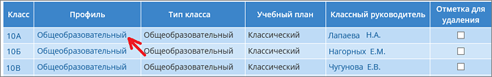
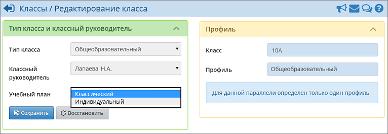
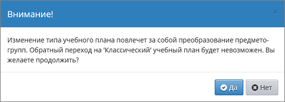
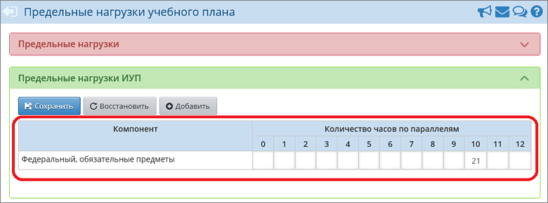
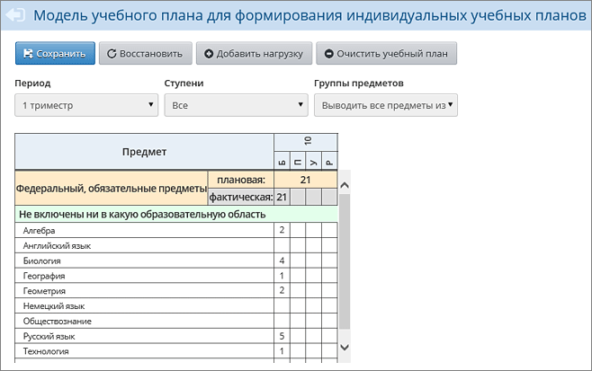
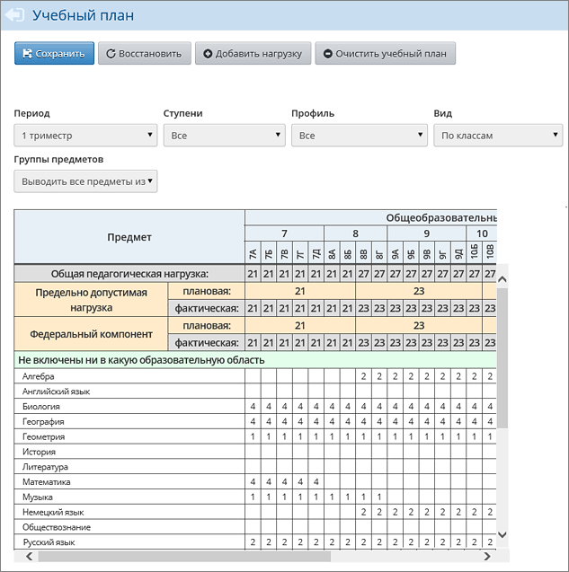

и изменить учебный план «Классический» на «Индивидуальный»:

После чего возникнет предупреждение, что обратный переход от ИУП к КУП будет невозможен. С предупреждением нужно согласиться для продолжения работы:

В результате этих действий:
| 1) | в экране Планирование -> Нагрузка автоматически сформируется предельная нагрузка по одному компоненту – «Федеральный, обязательные предметы»:
|
 |
| 2) | В экран «Индивидуальный учебный план (ИУП)» автоматически перенесутся часы по каждому предмету из экрана «Учебный план»:
|
 |
Особенности:
| · | все часы будут вписаны в столбец, соответствующий уровню изучения «Базовый»;
|
| · | если в столбце «Базовый» по какому либо предмету уже проставлены часы, то система не будет менять цифру в этой клетке. В частности, при аналогичной замене учебного плана в классах 10б, 10в и т.д. цифры в индивидуальном учебном плане меняться уже не будут. В связи с этим после всех преобразований необходимо будет скорректировать учебный план (см. инструкцию далее).
|
Примечание. Другие обозначения уровней в таблице ИУП: П – профильный, У – углубленный, Р – расширенный.
В классическом разделе «Учебный план» для этого класса (в данном примере 10а) часы исчезнут:

Таблица учебного плана зависит от учебного периода. Видно, что в обоих экранах – «Учебный план» и «Индивидуальный учебный план» - есть выпадающий список «Период».
Аналогичным образом нужно изменить тип учебного плана «Классический» на «Индивидуальный» для всех классов в данной параллели (в данном примере осталось изменить также для 10б и 10в).